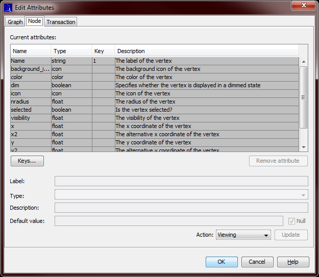

Edit Attributes
For each type of graph (simple, analytic, etc), CONSTELLATION associates a set of attributes for the
graph, nodes and transactions entities. The set of attributes is defined by the graph's schema.
"Edit Attributes" provides the ability to browse, add, edit and delete attributes.
Layout
Select "Edit → Attributes..." from the main menu.

The attributes for each element type (graph, node and transactions) can be viewed by selecting one of the tabs at
the top of the panel. The attributes are listed in the upper part of the panel: attributes with a grey background
are defined by the graph's schema, and cannot be edited.
Selecting one of the attribute rows will display the attribute in the editing section.
The Name, Type, and Description columns display the name, type, and description of each attribute. The Key column
indicates whether the attribute is a key by showing the attribute's position within the key; a blank value means
the attribute is not a key.
Attribute Actions
Any attribute or key changes made in the "Edit Attributes" dialog box are not applied to the graph until you
select OK. If you select Cancel, the dialog box will close with no changes made to the graph.
The editing panel offers several actions:
-
Viewing
While viewing, you can select an attribute from the table and show it in the fields below the table.
Nothing is changed while viewing. While performing another action, you will be returned to Viewing
if you select an attribute in the table.
-
Add an attribute
This allows you to manually add an attribute to the graph. The currently displayed attribute will be used
as a starting point. When you have fully described the new attribute, select Update and the new attribute
will be added to the table.
-
Edit an attribute
This allows you to edit an attribute in the table. Attributes that belong to the schema or are part of the key
cannot be edited. Select Update to finish editing the attribute and replace it in the table.
-
Add from schema
This allows you to add an attribute defined by the schema. After selecting a schema attribute, select Update
to add it to the table.
Other operations
-
Attributes can be removed using the "Remove attribute" button. Select the attribute in the table, then select
"Remove attribute"
-
Keys can be defined using the "Keys..." button. This will display a dialog box that allows you to move
attributes to and from the "Selected attributes" column, and change their order. Selecting OK will display
the new key attribute values in the table.
It is strongly recommended that you do not change the key attributes. If you do, graph functionality
will be affected.
Applying changes
Any changes you have made in the "Edit Attributes" table will only be applied to your graph when you select OK.
Selecting Cancel will abandon your changes.